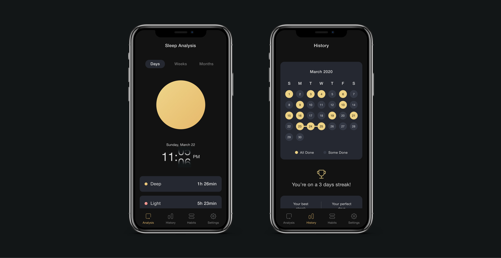
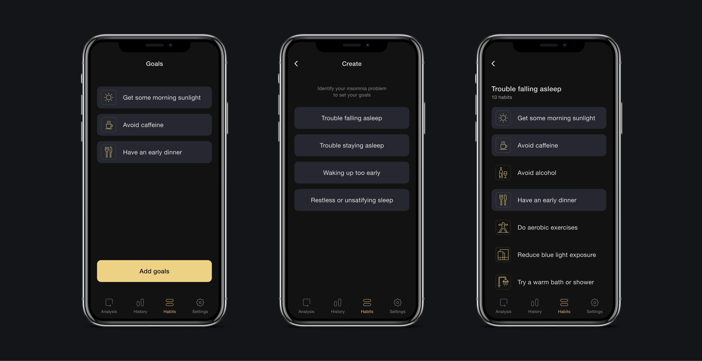
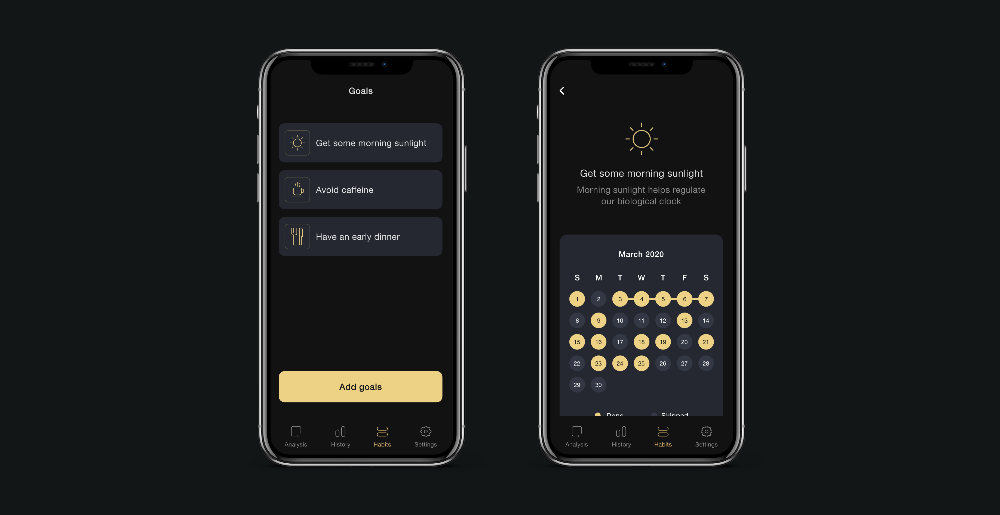
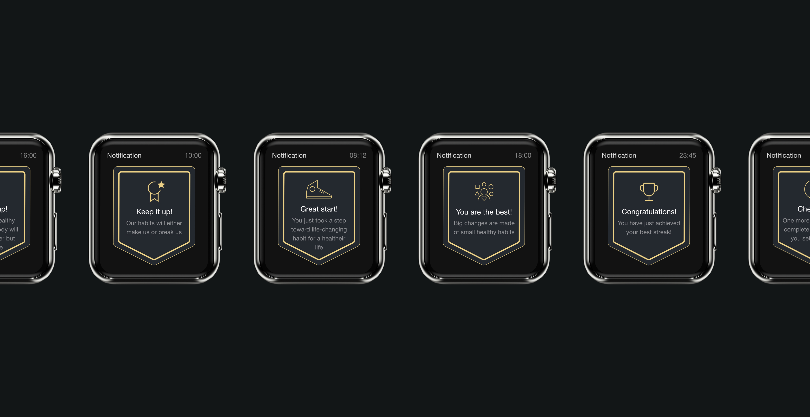

Problem
More than one-third of American adults are not getting enough sleep on a regular basis.
Endsomnia
More than one-third of American adults are not getting enough sleep on a regular basis.
I conducted a questionnaire and the results reflected that 88.3% of the participants have one or more insomnia problems. 60% of people answered that they are familiar with tips and knowledge that can improve sleep, however despite how knowledgeable they are, only 11.7% of participants said they are satisfied with their current sleep pattern.

According to a survey conducted by Deloitte, 81% of people use their phones within an hour before bedtime, while the majority of them know it can disturb their sleep.
If lifestyle and unhealthy sleep habits are the cause of insomnia, there are cognitive behavioral techniques and sleep hygiene tips that can help. Endsomnia aims to help users to break unhealthy sleeping habits and create better ones for a good night's rest. Based on the user’s desired bedtime, reminders will be sent to inform users to act or cease certain habits at the best time to perform.
Users can access to their last night sleep data and history that reflects user's participation to help them to track and continue to achieve their goals. Users are able to interact with the circle icon on Analysis page by chaining the time underneath in order to see their sleep stages at a certain time. circle will change its colors based on different REM stages.

On habit page, users will be asked to select their insomnia problems in order to receive different reminders depends on the cause. After identifying their insomnia problems, they will be able to select goals that they want to focus on.

Clicking each goals on a habit page allows users to breifly see and learn the advantage of performing each habits and also to track their progress of each habits.

When users input their desire wake up time or bedtime, Endomnia provides the suggested bedtime that are broken down to optimize for their REM and non-REM sleep cycles. Based on users goal bedtime, Endsomnia calculate the best time to send reminders to users

Once users set their goals, Endsomnia will start to send out notifications and remind them to perform healthy habits and quit unhealthy ones. Endsomnia sends reminders to users and help them to practice healthy sleeping habits at the best time possible. for example, users will receive “Avoid caffeine” notification 6 hours before bed.

When users receive the reminders, they can slide up to see information and learn about advantage of performing each habits. They will be asked to swipe left when they accomplished a goal or swipe right to skip. All the users’ participation will be reflected on the data and will help users to track their history and continue to achieve their goals.

When users complete their goal, Endsomnia will send different cheering message to help and motivate users to continue to achieve their goal and build healthy habits.
